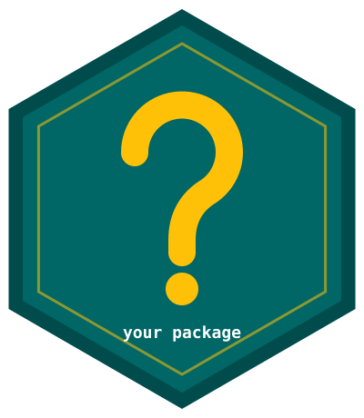
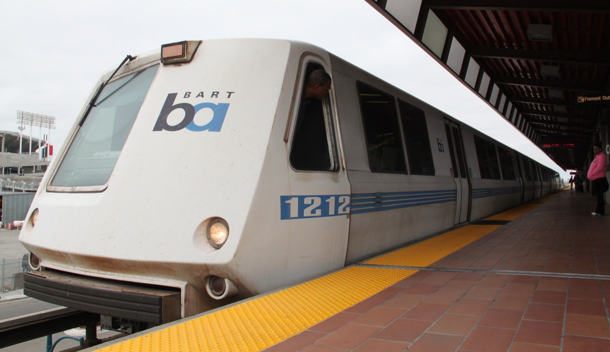

ggplot(trips, aes(x = .data$minutes, y = .data$fare)) +
geom_point()Project 5: Build a Package

Every package you’ve used this semester started as someone’s functions for a job they kept doing by hand. In this project you’ll write your own: an R package that wraps a web API, with documentation, tests, a data set it built, and a README that shows how to use it.
By completing this project, you will:
- Wrap requests to an API in documented functions in an R package
- Test functions whose output changes from day to day
- Store a data set in a package and document it
- Answer a question with data from your own package
- Ship a package that someone else can install and use
Choose your route
Build a package of your own design, or take the BART route, where the API, the question, and the functions are chosen for you. The tabs below all switch together.
Pick a public API with data you’re curious about, and a question it could answer. These work from R without a key:
| API | Example question |
|---|---|
| Open-Meteo (weather) | How much warmer are Berkeley’s Septembers now than in the 1990s? |
| USGS Earthquakes | Where in California did this year’s earthquakes over magnitude 3 happen? |
| iNaturalist (wildlife sightings) | When in the year are monarch butterflies seen in the Bay Area? |
| Open Library (books) | How has the length of an author’s books changed over their career? |
| Federal Register (federal rules) | Which agencies publish the most rules on wildfire? |
APIs with a free key, like NASA’s or FRED’s, are fine too (see “If your API needs a key” below). Your API must:
- answer requests built with
request()andreq_url_query()with JSON; - be free, with no sign-in or “authorize an app” step (so not Spotify, Google, or Reddit);
- allow enough requests to build your data set (check its rate limit).

Many Berkeley students live farther out and ride BART to Downtown Berkeley. Your question:
Which BART stations could you live near and still make a 9:00 am class on campus, and what would the commute cost you each week?
Your package, bartcommute, has two functions, bart_stations() and bart_trip(), specified in Part 1.
What your package needs
Your deliverable is your repo: an R package that installs from GitHub and
- is useful or interesting: its functions together answer a question, and at least one takes arguments that change what it does (Parts 1 and 3);
- calls a web API (Part 1);
- has at least two exported functions, at least one of which wraps the API and returns a tidy data frame with the right types. The other may wrap the API too, or summarize or plot your package’s data (Part 1);
- stores a data set built with its own functions, from at least 10 requests and under 5 MB (Part 3);
- is documented: Roxygen for every exported function (title,
@param,@returns,@examples,@export) and for the data set (@format,@source) (Parts 1 and 3); - has passing tests of a typical input, an edge case, and an error (Part 2);
- has a complete
DESCRIPTIONandNAMESPACE, so thatcheck()reports no errors or warnings (Parts 1 and 4); - has a README that explains the package and walks through examples and your analysis (Part 5).
Optionally, it also has a pkgdown website (see the end of this page).
Your template repo
Your template repo is an R package. Its project.qmd renders to README.md, the front page of your repo on GitHub (like dplyr’s). It holds:
DESCRIPTION,NAMESPACE, andLICENSE: a package skeleton. You’ll fill inDESCRIPTIONandLICENSE.project.qmd: your README’s source. Its top comment explains the setup..Rbuildignore: files in your repo that aren’t part of the package. Leave it as it is.
NoteIf your API needs a key
A key works like a password, so it must never appear in your repo.
- Run
usethis::edit_r_environ(), add a line likeNASA_KEY=abc123, save, and restart R..Renvironlives in your home folder, so git never sees it. - Give each function a
keyargument whose default isSys.getenv("NASA_KEY"), andstop()with a clear message when it’s"". - If a key is ever pushed, replace it: deleting it later doesn’t remove it from your repo’s history.
- Start each test that calls the API with
skip_if(Sys.getenv("NASA_KEY") == "", "no API key"), and use@examplesIf nzchar(Sys.getenv("NASA_KEY"))instead of@examples, so someone without your key, like your GSI, gets skips instead of failures. - In your README, say where to get a key and what to name it.
Part 1: Wrap the API
Write functions that send requests to the API and return tidy data frames, and document them as you go.
Steps
- Fill in
DESCRIPTION(Package,Title,Authors@R,Description) and put your name inLICENSE. On your own route, choose a package name of letters and numbers and use it as thetitleofproject.qmd. - Run
usethis::use_package("httr2"). Whenever your functions call another package, run it for that package too. Inside a package, call functions with::(httr2::request()), neverlibrary().
Send a request in a browser, then from R with
req_url_query()andresp_body_json(simplifyVector = TRUE), as in APIs I. Find the path of$s to your data.Note the type of each value you’ll keep, and which need converting (numbers stored as strings, dates, codes).
In a file made with
use_r(), write your first function. It takes arguments that change the request and returns a data frame with one row per observation and a column of the right type for each value. Give it a Roxygen block: a title,@params,@returns,@examples, and@export.Write a second function. It can wrap the API too (another endpoint, as
bart_stations()feedsbart_trip()), or summarize or plot your package’s data: it takes your first function’s output or your data set, plus an argument that changes the result, like which column to plot. Document and export it like the first. Inside a package, name columns indplyrandggplot2with the.datapronoun, socheck()knows they’re columns:
The trip planner is the endpoint sched.aspx. This request asks for the last trip from Millbrae (MLBR) that reaches Downtown Berkeley (DBRK) by 8:45 am on November 18, 2026, 15 minutes before a 9:00 am class:
https://api.bart.gov/api/sched.aspx?cmd=arrive&orig=MLBR&dest=DBRK&date=11/18/2026&time=8:45am&b=0&a=0&key=MW9S-E7SL-26DU-VV8V&json=ycmd=arrive asks for trips that arrive by time, and b=0&a=0 returns only the last of them. (BART’s documentation describes b and a differently; this is how they behave.)
Send the request in a browser, then from R as in APIs I, and find the path of
$s to the trip. Look at the start of the response to see why so many names begin with@.Work out which of
@fare,@clipper, andfaresis the adult Clipper fare, and check it on bart.gov’s trip planner.In
R/stations.R(use_r("stations")), writebart_stations(). Its one argument,key, defaults to BART’s public key,"MW9S-E7SL-26DU-VV8V". It requests the station list from PS 6 and returns one row per station with the columnsabbr,name,city,county,lat, andlon, withlatandlon(BART’sgtfs_latitudeandgtfs_longitude) as numbers. Give it a Roxygen block: a title,@param,@returns,@examples, and@export.In
R/trip.R, writebart_trip():bart_trip <- function(orig, dest = "DBRK", arrive_by = "8:45am", date = "11/18/2026", key = "MW9S-E7SL-26DU-VV8V") { # Your code here. }It sends the request above with its arguments filled in, and returns one row:
Column Holds orig,destthe abbreviations of the stations the trip starts and ends at depart,arrivewhen the trip leaves origand reachesdest, as date-times in Pacific timeminutesthe length of the trip, in minutes farethe fare with a Clipper card, in dollars transfersthe number of times you change trains Every value BART sends is a string, so convert
minutesandfareto numbers.lubridate::mdy_hm()parses"11/18/2026 07:31 AM", and each train you ride is a row of the trip’sleg. Give each argument an@param.
- Run
document()andload_all(), and try each function and its help page. Then runcheck()and fix everything it reports. (A “no visible binding for global variable” note means a function names a column bare, as infilter(fare > 5); write.data$fareinstead.)
Part 2: Test It
Test your functions on typical inputs, edge cases, and errors, as in the Testing lecture. Because the API’s data changes, don’t test today’s exact values: test what your function promises, the shape and types of its output and rules every response follows, which expect_true(all(...)) checks for every value at once. For celsius() from PS 6:
test_that("temperatures above freezing are above 0 °C", {
temps <- celsius(c(33, 50, 72, 98.6, 212))
expect_true(all(temps > 0))
})Steps
- Run
use_testthat(), thenuse_test()for each file inR/.
- Typical input, shape: test for the columns you documented, in order, with the right types.
- Typical input, rules: test at least two rules every response follows, like dates in the range you asked for, counts that are never negative, or IDs that are unique.
- Edge case: find an input that makes the output unusual (no matches, one match, a missing value), decide what your function should return, and test it.
- Errors: make your function
stop()with a clear message on bad input (the wrong type, more than one value), and test each case withexpect_error()and its message. - Hunt for a bug on inputs you didn’t design for, like every value of a lookup or the ends of a date range. Write a failing test first, then fix the function until it passes.
If your second function summarizes or plots, test it with steps 2–5 too. For a plot, expect_true(inherits(p, "ggplot")) checks that it made one; for a summary, check its columns and number of rows.
- Typical input, shape: test that
bart_stations()returns Part 1’s six columns, in order, withlatandlonas numbers, and thatbart_trip("MLBR")returns one row with Part 1’s seven columns, in order. - Typical input, rules: test at least two rules every trip follows, like arriving by
arrive_by,minutesmatchingdifftime(arrive, depart, units = "mins"), or a positivefareandminutes. - Edge cases: test a trip with no transfers (from
MLBR) and one with a transfer (fromDUBL). - Errors: make
bart_trip()stop()with a clear message whenorigisn’t a single string, and testbart_trip(c("MLBR", "DUBL"))withexpect_error()and your message. Then test thatbart_trip("XXXX"), a station that doesn’t exist, gives an error too: BART’s ownHTTP 400message is fine there. - A classmate reports: “
bart_trip()stopped at Downtown Berkeley withHTTP 400 Bad Request.” Decide whatbart_trip("DBRK")should do (open the Part 1 URL withorig=DBRKto see why BART refuses). Write a failing test first, then fixbart_trip()until it passes.
- Run
test()andcheck(), and fix anything that fails.
Part 3: Store and Answer
Build a data set with your functions, store it in your package, and use it to answer your question.
Steps
Build your data set by calling your functions many times. Run
usethis::use_data_raw("name"), naming your data set (the BART route’s iscommutes); it creates the scriptdata-raw/name.R. Start it withdevtools::load_all(), so the script can find your functions. Then call your function once for each thing you want to ask about (each date, place, or name), and stack the results into one data frame. It’s the pattern you used in Project 3, with requests in place of files:# Project 3: read one file per path events <- lapply(paths, fromJSON) |> bind_rows() # Here: send one request per input results <- lapply(inputs, your_function) |> bind_rows()End the script with
usethis::use_data(name, overwrite = TRUE), which saves the data frame in your package asdata/name.rda, and run the script once at the console. Your package now carries a snapshot of the data, so your analysis never has to ask the API again. (data-raw/isn’t part of the installed package.)Size: build it from at least 10 requests, and keep
data/name.rdaunder 5 MB (check withfile.size("data/name.rda") / 1e6). GitHub refuses files over 100 MB, and CRAN keeps a package’s data under 5 MB. If yours is too big, keep only the rows and columns your analysis uses. Stay within your API’s rate limit: a few hundred requests is plenty.Document the data set in
R/data.Rwith a title,@format(every column, with units), and@source(where and when you got it). Rundocument()only afteruse_data(): it errors if the data set doesn’t exist yet.
- Make a plot that speaks to your question.
- Find a place where the data doesn’t do what you’d expect, show it in a plot or table, and explain it.
- Answer your question in a paragraph, citing your plots, and name one limitation of the data.
In step 1, commutes joins bart_stations() to each station’s bart_trip(), using lapply(stations$abbr, bart_trip) (50 requests).
- Map the stations colored by commute time (
st_as_sf(coords = c("lon", "lat"), crs = 4326), thengeom_sf()), and make a table of those within 30 minutes. - Add a weekly cost (a round trip, five days a week) and plot commute time against it, colored by transfers. Find the stations that break the pattern and explain them with bart.gov’s fares.
- Name up to three stations you’d live near and say why, using time, cost, and transfers. Give one limitation of these data.
Part 4: Ship It
Make sure someone else can install and use your package.
Steps
- Run
check(): 0 errors and 0 warnings, and fix or explain any notes. - Run
devtools::install(), restart R, and load your package withlibrary(). Try an example and your data set’s help page. - Commit and push.
Part 5: Write the README
Your README is your package’s front page. Write it in project.qmd, in the five sections below. Run anything that calls the API at the console and paste its output (see the template’s comment), so the README renders without the API.
A. Overview
What your package does, the API it wraps, and the question it answers.
B. Installation
The remotes::install_github() line for your repo, and how to set up a key if it needs one. Your repo is private for now, so the line won’t work for other people yet. At the end of the course we’ll show you how to make your repos public, if you’d like a portfolio of your work.
C. Usage
An example of each exported function with its output, and the first rows of your data set. On the BART route, show bart_stations() and bart_trip("MLBR").
D. Analysis
Your question, your plots (each with a fig-cap) and tables, your answer, and its limitation, from Part 3.
E. Testing
Your test descriptions (the sentences that finish “Test that …”) grouped as typical inputs, edge cases, and errors; your bug test from Part 2 and what it found; and the last lines of test() and check().
Steps
- Render
project.qmd. - Turn off your wifi and render it again. If it fails, find the chunk that calls the API and fix it.
- Push, and read your README on GitHub as a stranger would: once your repo is public, could they install your package and run your examples?
TipOptional: Publish your package’s website
pkgdown builds a website for your package: the README as its home page, plus a help page for every function and data set (see dplyr’s).
- Run
install.packages("pkgdown"), thenusethis::use_pkgdown()once. - Give every plot a
fig-cap, renderproject.qmd, and runpkgdown::build_site(). - Drag the
docs/folder onto https://app.netlify.com/drop, signed in to the Netlify account you made for Project 4. To update the site, rebuild it and dragdocs/onto the site’s Deploys page.
Bring the link to your Project Studio.